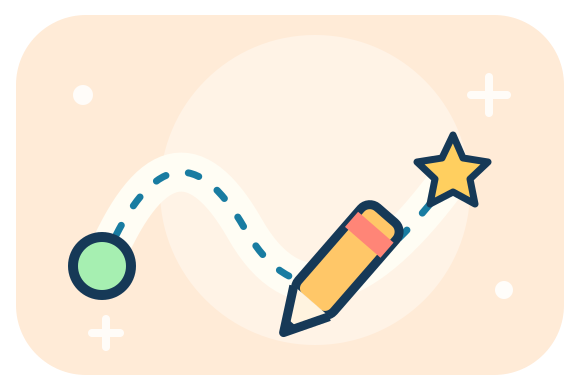

PREGRAFISMO
⌂ GIOCHI
⛶ SCHERMO
SUONI
⚙
Disegniamo con il dito! 🌟
Dal verde alla stella, segui il percorso.
✏️ CLASSICI PC · 32
⭐ ALTRI PERCORSI · 56
●
100%
👆 Segui i puntini!
← PERCORSI
↻ RIPROVA
👆 Segui i puntini
AVANTI ➜
← PRIMA
▶ MOSTRA
◎ PRECISO
☆ SCENARI
−
+